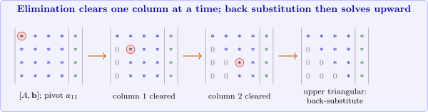

4.2 Gaussian elimination and backward substitution
Gaussian elimination uses row operations of type (ii) to create zeros below the diagonal, one column at a time. At stage \(i\) the entry \(a_{ii}\), the pivot, is used to eliminate \(x_i\) from equations \(i+1,\dots ,n\): equation \(E_j\) is replaced by \(E_j-m_{ji}E_i\) with the multiplier \[m_{ji} = \frac {a_{ji}}{a_{ii}} .\] After \(n-1\) stages the system is upper triangular, and it is solved from the bottom up by backward substitution: \[x_n = \frac {a_{n,n+1}}{a_{nn}},\qquad x_i = \frac {1}{a_{ii}}\left (a_{i,n+1}-\sum _{j=i+1}^na_{ij}x_j\right ),\quad i = n-1,\dots ,1,\] where \(a_{i,n+1}\) denotes the (modified) right-hand side.

Example 4.2.1. Solve by Gaussian elimination and backward substitution: \begin {align*} x_1+x_2+3x_4 &= 4,\\ 2x_1+x_2-x_3+x_4 &= 1,\\ 3x_1-x_2-x_3+2x_4 &= -3,\\ -x_1+2x_2+3x_3-x_4 &= 4 . \end {align*}
Solution. The augmented matrix and the first stage (pivot \(a_{11} = 1\), multipliers \(m_{21} = 2\), \(m_{31} = 3\), \(m_{41} = -1\)): \[\left [\begin {array}{rrrr|r}1&1&0&3&4\\2&1&-1&1&1\\3&-1&-1&2&-3\\-1&2&3&-1&4\end {array}\right ]\longrightarrow \left [\begin {array}{rrrr|r}1&1&0&3&4\\0&-1&-1&-5&-7\\0&-4&-1&-7&-15\\0&3&3&2&8\end {array}\right ].\] Second stage, pivot \(a_{22} = -1\), multipliers \(m_{32} = 4\), \(m_{42} = -3\): \[\left [\begin {array}{rrrr|r}1&1&0&3&4\\0&-1&-1&-5&-7\\0&0&3&13&13\\0&0&0&-13&-13\end {array}\right ].\] The third stage has nothing to do (\(m_{43} = 0\)). Backward substitution gives \begin {align*} x_4 &= \frac {-13}{-13} = 1, & x_3 &= \frac {13-13x_4}{3} = 0,\\ x_2 &= \frac {-7+x_3+5x_4}{-1} = 2, & x_1 &= 4-x_2-3x_4 = -1 . \end {align*}
The solution is \((x_1,x_2,x_3,x_4) = (-1,2,0,1)\), which can be checked by substitution.
If a pivot is zero, elimination cannot continue as it stands; but if \(A\) is nonsingular, some entry below the zero pivot in its column is non-zero, and interchanging the two rows lets elimination proceed.
Example 4.2.2. Solve \begin {align*} x_1-x_2+2x_3-x_4 &= -8,\\ 2x_1-2x_2+3x_3-3x_4 &= -20,\\ x_1+x_2+x_3 &= -2,\\ x_1-x_2+4x_3+3x_4 &= 4 . \end {align*}
Solution. The first stage, with \(m_{21} = 2\), \(m_{31} = m_{41} = 1\), gives \[\left [\begin {array}{rrrr|r}1&-1&2&-1&-8\\0&0&-1&-1&-4\\0&2&-1&1&6\\0&0&2&4&12\end {array}\right ].\] The pivot \(a_{22}\) is now \(0\), so we interchange \(E_2\) and \(E_3\) (the first row below with a non-zero entry in column 2): \[\left [\begin {array}{rrrr|r}1&-1&2&-1&-8\\0&2&-1&1&6\\0&0&-1&-1&-4\\0&0&2&4&12\end {array}\right ].\] No elimination is needed in column 2. In column 3, \(m_{43} = -2\) gives the last row \((0,0,0,2\mid 4)\). Backward substitution: \(x_4 = 2\), \(x_3 = \frac {-4+x_4}{-1} = 2\), \(x_2 = \frac {6+x_3-x_4}{2} = 3\), \(x_1 = -8+x_2-2x_3+x_4 = -7\).
Algorithm 4.2.3 (Gaussian elimination with backward substitution). Input: the \(n\times (n+1)\) augmented matrix \(A = (a_{ij})\). Output: the solution \(x_1,\dots ,x_n\), or a message that the system has no unique solution.
- Step 1:
- For \(i = 1,\dots ,n-1\) do Steps 2–4.
- Step 2:
- Let \(p\) be the smallest integer with \(i\leq p\leq n\) and \(a_{pi}\neq 0\). If there is none, output “no unique solution” and stop.
- Step 3:
- If \(p\neq i\), interchange rows \(p\) and \(i\).
- Step 4:
- For \(j = i+1,\dots ,n\): set \(m_{ji} = a_{ji}/a_{ii}\) and replace row \(j\) by row \(j-m_{ji}\cdot \)row \(i\).
- Step 5:
- If \(a_{nn} = 0\), output “no unique solution” and stop.
- Step 6:
- Set \(x_n = a_{n,n+1}/a_{nn}\).
- Step 7:
- For \(i = n-1,\dots ,1\): set \(x_i = \left (a_{i,n+1}-\sum _{j=i+1}^na_{ij}x_j\right )\big /a_{ii}\).
- Step 8:
- Output \(x_1,\dots ,x_n\).
Operation count
The cost of an algorithm is measured by the number of arithmetic operations it performs. Multiplications and divisions take longer than additions and subtractions on many machines, so they are counted separately.
Theorem 4.2.4. Gaussian elimination with backward substitution on an \(n\times n\) system requires \[\frac {n^3}{3}+n^2-\frac {n}{3}\ \text { multiplications/divisions}\qquad \text {and}\qquad \frac {n^3}{3}+\frac {n^2}{2}-\frac {5n}{6}\ \text { additions/subtractions.}\]
Proof. Elimination. At stage \(i\) there are \(n-i\) rows to modify. For each, computing \(m_{ji}\) takes \(1\) division, and replacing the row takes \(n-i+1\) multiplications and \(n-i+1\) subtractions (columns \(i+1\) to \(n+1\); column \(i\) is simply set to zero). So stage \(i\) costs \((n-i)(n-i+2)\) multiplications/divisions and \((n-i)(n-i+1)\) subtractions. With \(k = n-i\) running from \(1\) to \(n-1\), and using \(\sum _{k=1}^{m}k = \frac {m(m+1)}2\) and \(\sum _{k=1}^mk^2 = \frac {m(m+1)(2m+1)}{6}\) with \(m = n-1\), \[\sum _{k=1}^{n-1}k(k+2) = \frac {2n^3+3n^2-5n}{6},\qquad \sum _{k=1}^{n-1}k(k+1) = \frac {n^3-n}{3} .\] Backward substitution. Computing \(x_i\) takes \(n-i\) multiplications, \(n-i-1\) additions, \(1\) subtraction and \(1\) division. Summing over \(i\) gives \(\frac {n^2+n}{2}\) multiplications/divisions and \(\frac {n^2-n}{2}\) additions/subtractions.
Adding the two parts gives the totals stated. □
Solution.
| \(n\) | multiplications/divisions | additions/subtractions |
| \(3\) | \(17\) | \(11\) |
| \(10\) | \(430\) | \(375\) |
| \(50\) | \(44{,}150\) | \(42{,}875\) |
| \(100\) | \(343{,}300\) | \(338{,}250\) |
| \(1000\) | \(334{,}333{,}000\) | \(333{,}832{,}500\) |
For large \(n\) both counts are about \(\frac {n^3}{3}\): doubling \(n\) multiplies the work by \(8\). The elimination dominates; backward substitution costs only \(O(n^2)\). Solving by Cramer’s rule, by contrast, needs \(n+1\) determinants, and computing each by cofactor expansion takes about \(n!\) operations, which is hopeless already for \(n = 20\).
Questions on this section
Stuck on something here? Ask below and it stays attached to this topic.